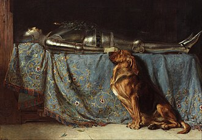

L

Requiescat - Briton Rivière - 1888
Le tableau représente un chevalier médiéval en armure allongé sur un lit aux draps bleus. Un chien de Saint-Hubert est assis au pied du lit, regardant attentivement le visage du chevalier. Une couronne est posée sur celui-ci, indiquant sa mort. Requiescat signifie "Repose en paix" en latin, ce qui peut expliquer le comportement du chienqui veille surson ancien maître.

Quand on aide un renard
Le tableau représente un chevalier sur son lit de mort. On voit un renard à l'air fidèle au pied du lit. L'histoire est que le chevalier, alors qu'il campait la veille d'un jour de bataille, a vu un renard blessé, cherchant de l'aide. Le chevalier, sachant qu'il allait certainement perdre la vie le lendemain, a décidé de donner ses sernières ressources à ce renard et de le soigner. Ce renard a retrouvé la trace du chevalier et a décidé de le remercier une dernière fois.